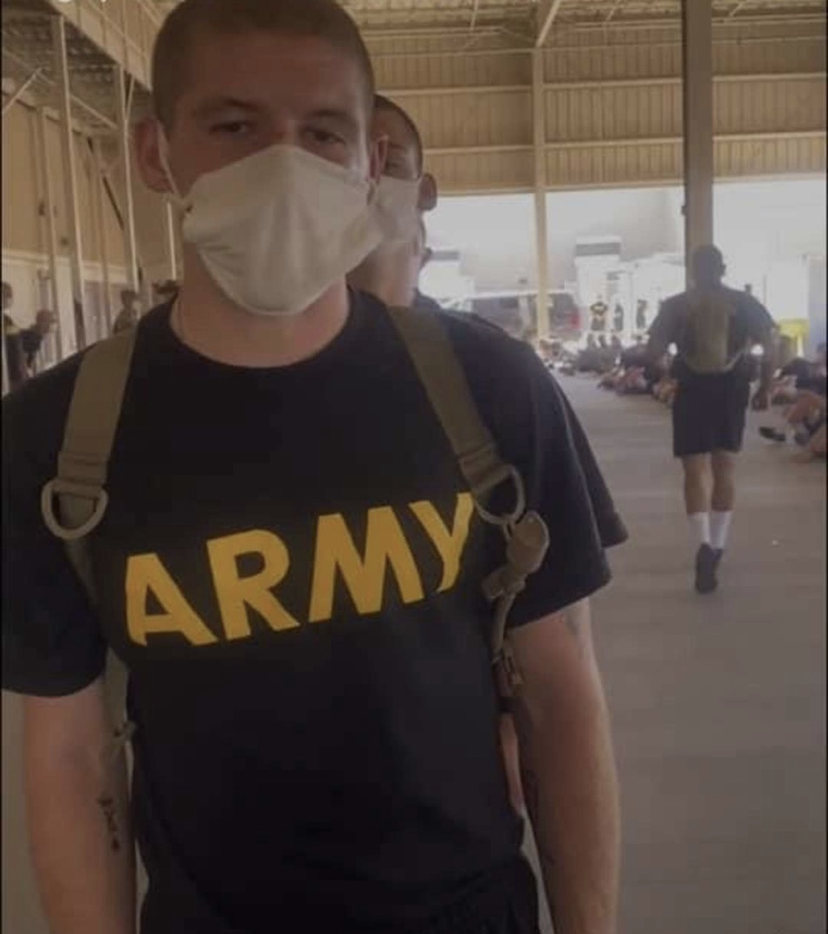
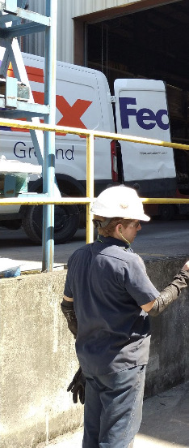

Welcome To My Personal Portfolio!
Hello, my name is Kyle Watson. I am 20. I am a software engineering student, however, I have had quite a journey
to come across this path. Let me show you my journey on this page!
Where My Journey Begins
After graduating high school I had planned to make a full career out of the Army.
Three days after I turned 18 I signed my Army contract, and was super excited for this journey.
However, plans made a sudden change when an incident happened during infantry training which resulted in
a medical discharge.

What Did I Do Next?
About six months after I got out of the Army I got a blue collar job in a factory. This is where I currently work
when I'm not doing school. The factory I work in manufactures the material to put together steel buildings.
I work around 50-60 hours a week, but it keeps my family fed while I chase the career I want which brings us to our
next topic.

My Dream Career
My interest in coding sparked when my grandfather took a college
course in coding when I was younger. Since then I've always had a love for working with computers,
and definitely sparked an interest in wanting to learn how to code. I started out just learning fun command prompt
commands and when I saw an add on Facebook about software engineering schooling I started doing research.
Research showed me I could make good money in something I was genuinely interested in so I jumped right in.
To me it is absolutely amazing that a few months ago I couldn't write a single line of code and now I can code
this entire website! Now I know exactly what I want to do for my future career.

Thank You For Coming Along This Journey With Me!
Now you know my adventure to getting where I am today with my schooling.
I believe every step along the way has taught me something valuable that will stay with me and help me learn
some skills I will use along this new career path. Thanks again so much for joining me on this journey!